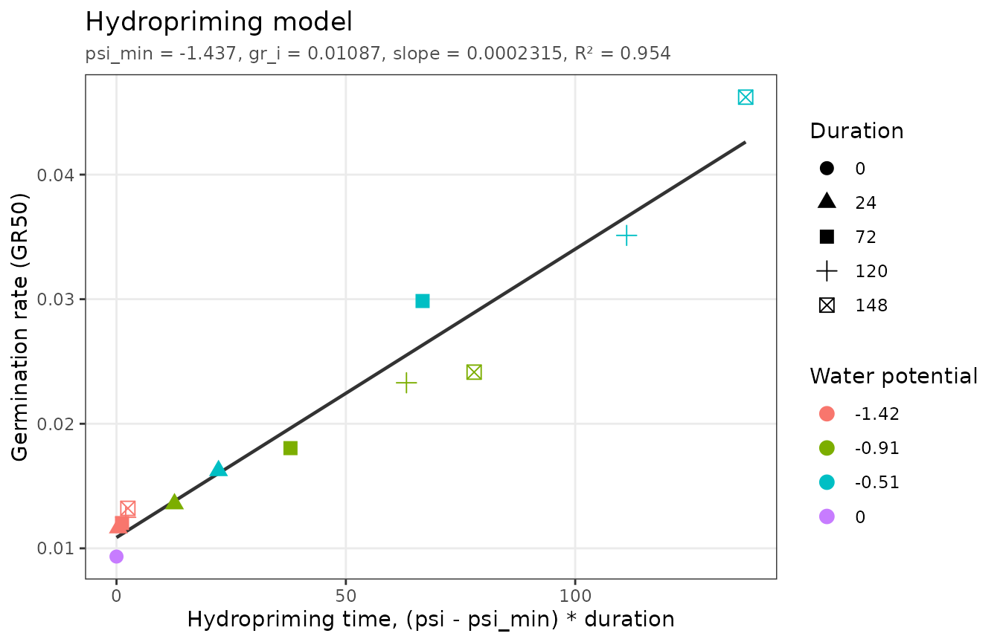
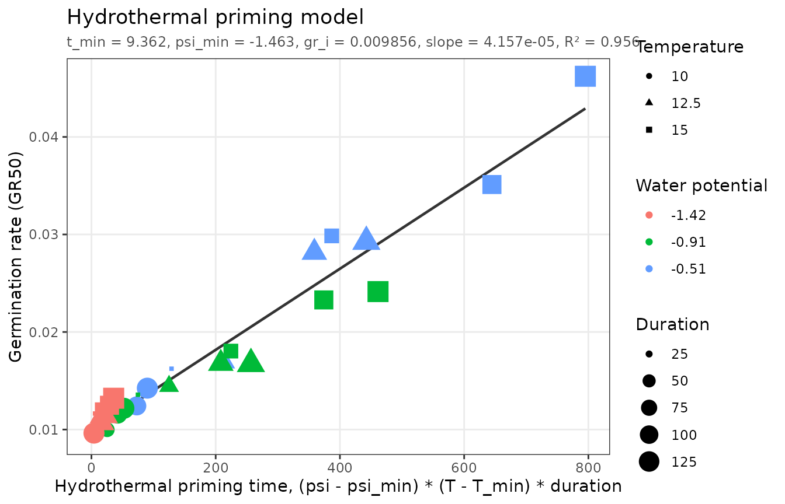

Priming hydrates seeds to just below the level needed to complete germination, holds them there for a while, and dries them again (Bradford, 1986). Primed seeds germinate faster and more uniformly. The advancement depends on the priming water potential and duration, and, for hydrothermal priming, on the priming temperature (Bradford and Haigh, 1994).
Unlike the other models, the priming models are fit to germination
rates. The data are germination time courses of seed samples
primed under different conditions and then germinated under standard
conditions. The fitting functions first compute the germination rate of
each priming treatment at a chosen fraction (speed = 0.5 by
default,
i.e. ,
the inverse of the time to 50% germination) with
germ_speed(), and then fit a line to those rates.
Hydropriming
The hydropriming time accumulated during priming at water potential for duration is , where is the lowest water potential that still has a priming effect. Germination rates increase linearly with it:
where
is the rate of unprimed seeds and
is the hydropriming time constant. pbtm estimates the
slope,
.
hydropriming_data includes unprimed controls and priming
at three water potentials for up to 148 hours:
fit_hp <- fit_hydropriming(hydropriming_data)
fit_hp
#> <pbtm_fit> Hydropriming model
#>
#> psi_min gr_i slope
#> -1.437 0.01087 0.0002315
#>
#> n = 13, pseudo-R2 = 0.9544, AIC = -150.5; rates at 50% germinationThe germination rates the model was fit to are in
fit_hp$data:
head(fit_hp$data)
#> # A tibble: 6 × 6
#> TrtID PrimingWP PrimingDuration Fraction Time GR
#> <dbl> <dbl> <dbl> <dbl> <dbl> <dbl>
#> 1 1 0 0 0.5 107. 0.00934
#> 2 2 -0.51 24 0.5 61.6 0.0162
#> 3 3 -0.51 72 0.5 33.5 0.0299
#> 4 4 -0.51 120 0.5 28.5 0.0351
#> 5 5 -0.51 148 0.5 21.6 0.0462
#> 6 6 -0.91 24 0.5 73.7 0.0136The rates lie on a line against hydropriming time, which requires a
psi_min estimate to compute:
autoplot(fit_hp)
Log axes on both scales
(x_scale = "log", y_scale = "log") are also available.
Because of the
intercept, the fitted line curves on a log-log plot.
Designing a priming treatment
Any combination of water potential and duration that accumulates the same hydropriming time has the same effect. Rearranging the model gives the duration needed at a chosen water potential to reach a target rate:
p <- coef(fit_hp)
target_gr <- 0.02
psi <- c(-0.5, -1)
data.frame(
PrimingWP = psi,
duration = (target_gr - p[["gr_i"]]) / (p[["slope"]] * (psi - p[["psi_min"]]))
)
#> PrimingWP duration
#> 1 -0.5 42.10678
#> 2 -1.0 90.31107predict() gives the expected rate for any proposed
treatment:
predict(fit_hp, newdata = data.frame(PrimingWP = -0.5, PrimingDuration = c(24, 48, 96)))
#> [1] 0.01607304 0.02127811 0.03168824Hydrothermal priming
Hydrothermal priming time also counts the temperature above a minimum temperature for a priming effect:
fit_htp <- fit_hydrothermal_priming(hydrothermal_priming_data)
fit_htp
#> <pbtm_fit> Hydrothermal priming model
#>
#> t_min psi_min gr_i slope
#> 9.362 -1.463 0.009856 4.157e-05
#>
#> n = 36, pseudo-R2 = 0.9561, AIC = -447.7; rates at 50% germination
autoplot(fit_htp)
Warmer or wetter priming shortens the duration needed, and cooler or drier priming lengthens it. The same effect can therefore be reached with whatever combination of temperature, water potential, and duration is most convenient.
Rates at other fractions
To base the model on a different part of the germination time course,
change speed, for example to the time to 25%
germination:
fit_hydropriming(hydropriming_data, speed = 0.25)
#> <pbtm_fit> Hydropriming model
#>
#> psi_min gr_i slope
#> -1.429 0.008815 0.0005085
#>
#> n = 13, pseudo-R2 = 0.8884, AIC = -117.6; rates at 25% germinationIf you already have a table of germination rates, pass it with a
GR column (and no CumFraction column) and it
is used directly.
References
Bradford, K.J. (1986) Manipulation of seed water relations via osmotic priming to improve germination under stress conditions. HortScience 21: 1105–1112.
Bradford, K.J., Haigh, A.M. (1994) Relationship between accumulated hydrothermal time during seed priming and subsequent seed germination rates. Seed Sci. Res. 4: 1–10.